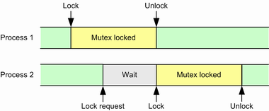

Mutex stands for mutual exclusion. Use mutexes to protect critical test script sections that can only be entered by one process at a time. A critical section, for example, configures a measurement, executes the measurement and retrieves the results.
Mutexes work with a lock/unlock mechanism. When a process reaches the beginning of a critical section, it tries to lock the mutex for that section. The process enters the critical section only if locking succeeds. When the process leaves the critical section, it unlocks the mutex.

Before you can use a mutex, you must create it via the command
When you create a mutex, you give it a name. This name is used by all other MUTex commands to identify the object.
A mutex can be valid and visible within the entire instrument with all its subinstruments, or within a single subinstrument only. This area is called the scope. The name is unique within its scope. If you lock a mutex, you lock it within its scope.
Before you enter a critical section, you send a lock request via the command
If the mutex is free, it is locked for you and the query returns an answer immediately. The answer includes a key, required to unlock the mutex later on.
If the mutex is not free, the query does not return an answer until the mutex becomes free.
If you want to get a fast answer, even if the mutex is not free, you can define a maximum waiting time in your query, the so-called polling interval. If the mutex is still not free after the defined polling interval, the query nevertheless returns an answer. You can then send a new lock request starting a new polling interval. Or with a sophisticated script, you can perform intermediate not critical actions and afterwards send a new lock request.
When you leave the critical section, unlock the mutex via the command
The command is only accepted if you send the correct key, received when locking the mutex. This mechanism ensures that only the process that has locked a mutex can unlock it.
If you do not unlock a mutex, it is nevertheless unlocked automatically after a configurable timeout. This mechanism ensures that a mutex is not locked forever if unlocking fails, for example if a remote control computer crashes.
You define the timeout in the lock request. If the lock request is successful, the timer is started.
Unlocking a mutex via a timeout is for error handling only. Do not design your script to use the timeout mechanism for unlocking. Use the unlock command instead.